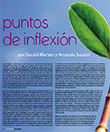
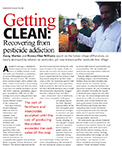
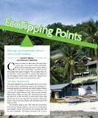
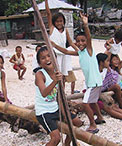

Rescatando
Bosques Manglares
Revista
Nuestra Planeta
Los Puntos de Inflexión Ecológica son palancas para restaurar la sustentabilidad a nuestro amenazado medio ambiente. Pequeñas acciones pueden lograr grandes diferencias cuando aprovechan los poderes inherentes de auto-sanación tanto de la naturaleza como de las sociedades humanas.
Los Puntos de Inflexión Ecológica son palancas para restaurar la sustentabilidad a nuestro amenazado medio ambiente. Pequeñas acciones pueden lograr grandes diferencias cuando aprovechan los poderes inherentes de auto-sanación tanto de la naturaleza como de las sociedades humanas.
Muchas problemáticas ambientales parecen ser tan complejas que es difícil saber por dónde empezar. Pero los eco-pioneros alrededor del mundo nos están demostrando lo que se necesita para darle voltereta a un problema. En un páramo de la India una antigua tecnología hace fluir los ríos. Un santuario marino en Filipinas vuelve a la vida a una pesquería arrecifal y a la economía de una isla. Estas historias son muy distintas. Pero tienen algo en común: un Punto de Inflexión Ecológica.
El Proyecto Puntos de Inflexión Ecológica está dedicado a difundir este paradigma, sus historias y sus lecciones a través de varios medios: libros, artículos de revistas, seminarios, talleres y colaboraciones directas con grupos comunitarios. Al investigar y analizar casos de alrededor del mundo, nuestra meta científica es un mejor entendimiento de los principios funcionales de los Puntos de Inflexión Ecológica.


Puntos de Inflexión Ecológica: Una Nueva Perspectiva en el Ambientalismo Estratégico
Historias de las Filipinas, India y Nueva York demuestran los principios claves de Puntos de Inflexión Ecológica.
Revista WorldWatch

Rescatando
Bosques Manglares
Revista
Nuestra Planeta

Escapando
la Adicción a Pesticidas
Revista
El Ecólogo

Restaurando
la Seguridad Ecológica
Revista
Estudios Políticos

Círculos Viciosos
Haciéndose Virtuosos
Revista
Isla de la Tierra

Compartiendo Éxitos
Ambientales con Estudiantes
Revista
El Profesor de Ciencias

Palancas para
la Sustentabilidad
Congreso Internacional
de Casos Exitosos
Este sitio web contiene material traducido del sitio web www.ecotippingpoints.org.
Traducción: David Nuñez. Redacción: Gerry Marten